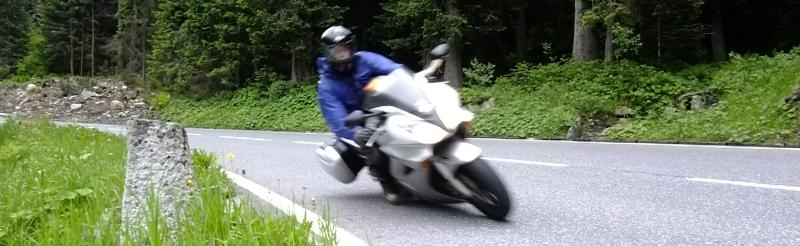

01 January 2011
So, after ending things with Liezl, I was a little disappointed that I wasn't going to spend more time in New Zealand. Negotiating with her, I managed to squeeze a month on my own back home no worries, but now that I'm single, I could have stayed a couple months at least!
But did manage to do a few things while in NZ. Got up to Mum's for a bit. Although this time she was living at Cable Bay, having sold the place at Taipa earlier last year. Hard to believe it was 24 years ago when we moved up North!
I did love the Cable Bay place. Short walk down to the beach, great sea views - and the sunsets were incredible. Oh, and I always miss Cooper's Beach Fish & Chips. Yum!
Other than that, it was just brief catchups with the rallies and a game or two of golf. Time disappeared way too quickly.
Stopped by in Melbourne to see Brendan (an ex-Airforce mate) and Arran, Ariane & Inez. Once again, what a great city. Caught up with some neat people and really loved it there.
Once back in the UK, life moved on...
In June, Kev and I were joined by Sam for yet another French Alps Experience. Wild camping, massive pizzas, broken mirrors, navigational mishaps, 3am steak, espressos, punctured tyre, jet fighters, snow-capped mountains, broken chain, gorgeous sunshine, curving winding roads, cute French waitresses, red wine and that return ride to the UK that just goes on and on....
Was a lot of fun and France was definitely a favourite this time. Shame we didn't make it down to Davos/Passo Stelvio, but we really started running out of time again. (Need more holidays!)
I loved when we were at the border of Switzerland, France and Italy. We'd spent a few days blatting around the passes in the Swiss Alps, but I asked the boys, "What do you fancy for dinner? French, or Italian?".

One of the more memorable roads was just
South-east of Briançon.
I'd previously done this road a few years ago heading towards Briançon, but
it was just superb in the other direction!
After spending time in the Alps, I go and organise my next trip on two wheels. A few years ago, I'd been watching some motorcycle blog videos by Mordeth13. He was running a scooter tour of Taiwan, which sounded like fun. So I paid a deposit and booked my flights.
Unfortunately, once I landed in Taipei all hell had broken out. Microsoft had released a patch which broke things for a client. One of those weird things where it affected all Vista and Win7 PCs, but XP was unaffected. So I spend the next few days hammering out a fix, which unfortunately impacted the timescales for some other work.
So I cancelled the scooter tour (tbh, I was getting a bad vibe from Mordeth anyway, so wasn't too upset about having to do that) and caught the bullet train down to Kenting National Park, which is tucked away right at the bottom of Taiwan.
I found a surf shack in Hengchun, a very provincial town. Not really a tourist hot-spot, but would suit me for my purposes. I'm not really big on the tourist thing anyway. More, I just like to wander around and explore. Not necessarily see 'the sights', but to get a feel for the culture and people.
So hired a scooter, so I could do my own little tour :-) and explored a lot of the local area. Found a lovely little beach not too far away that quickly became my regular haunt.
Headed out a couple of times to go surfing. First time, the waves weren't really suitable for a beginner (dumping straight onto rocks), so I spent most of the day either swimming out past the break, or watching the Hawaiians making a good go of it.
The second time we tried heading out the day that Typhoon Fanapi was due in. Gorgeous clear skies, nice little swell and some muppet in Taipei has decreed that all beaches are closed. Still tried to go out anyway, but it wasn't long before the Police got us to come back in. Bit of a pain, because conditions were perfect! I've definitely swum in a lot rougher seas at Bethell's Beach back home!
Later on, after the Police had left, a few guys braved the larger swell. Everyone wanted to go out, but it was getting annoying being told to get out of the water. But this 53-year-old Japanese guy caught a decent ride once he managed to get out past the break. (Paddling out looked like a lot of effort!)
Mostly though, I just enjoyed wandering around sampling lots of lovely local food. Did try Tui na massage. Think the masseuse managed to re-crack my damaged ribs. But apart from that I quite liked it.
After a couple of weeks chillaxing (and working) in Hengchun, I made my way back to Taipei. So much damage was evident after the Typhoon. Lots of flooding in various villages we drove through on my way back to the train station.
Loved exploring more of Taipei. But only had a couple of days to look around before leaving. Best bit was a dinner in this tiny tiny restaurant. I was seated with an elderly couple who were really sweet. I'd found it a bit hard to connect with many people in Taiwan. Maybe mostly due to me being shy, but also the language side of things. But this couple suggested a few things to try as well as showed me how to eat/prepare some of it. Was so delicious and enjoyable.
Returning to the UK it wasn't long before the cold weather started setting in. And you know what happens then...
I hope not! I'm not sure I could handle a winter in the UK. Christmas is definitely a time for the beach, barbeques, sunshine and a nice cold beer or three. A white Christmas looks great on the telly, but the reality isn't quite so ideal. Also, family are important and I do really miss them. Think I'd find it harder if I didn't see them regularly.
First stop was Dubai to see Mike and Brenda. Was great hanging out with them again. Loved getting stuck in sand out in the desert. And have really missed those fantastic drinks at Tasty Burger!
Also caught up with Will (boss from Westhill days ten years ago) and Jac. Also, Yousef and his new wife Meredith. They're both going to be in NZ celebrating their marriage there for all the Aussies and Kiwis who couldn't make it out to the ceremony in Dubai. Was lovely to be given the chance to celebrate it with them.
New Years was a tame affair for me. Spent it with my bro, very low-key, but enjoyable nonetheless. Roll on 2011!